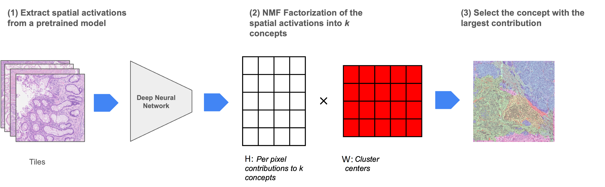

Unsupervised Semantic Segmentation with F-Seg
Unsupervised segmentation in digital pathology is a challenging problem. The F-Seg method leverages deep feature factorization (DFF) to extract meaningful concepts from image activations, enabling segmentation without labeled data. In this post, we explore the theoretical foundations of F-Seg, supported by mathematical formulations and practical Python code.

Deep Feature Factorization (DFF) and Non-Negative Matrix Factorization (NMF)
Theoretical Background
Given an input image \( I \), a deep network extracts activation maps \( A \in \mathbb{R}^{C \times rows \times cols} \), where \( C \) is the number of feature channels, and \( rows \times cols \) is the spatial resolution. Our goal is to decompose these activations into a set of interpretable components.
DFF achieves this via Non-Negative Matrix Factorization (NMF). The activation tensor is reshaped into a matrix \( A \in \mathbb{R}^{C \times (rows \cdot cols)} \), and we seek a factorization:
\[ A \approx W H \]
where:
- \( W \in \mathbb{R}^{C \times K} \) represents the concept basis (semantic components), and
- \( H \in \mathbb{R}^{K \times (rows \cdot cols)} \) represents the concept activations per spatial location.
The optimization problem solved by NMF is:
\[ \min_{W, H} \| A - W H \|_F^2 \quad \text{subject to} \quad W \geq 0, H \geq 0 \]
where \( \| \cdot \|_F \) denotes the Frobenius norm.
Why Non-Negative Matrix Factorization (NMF)?
NMF is particularly well-suited for unsupervised segmentation because it ensures that both the basis components and the activations are non-negative. This leads to parts-based representations, which aligns well with the idea of decomposing an image into meaningful segments. Unlike PCA, which allows both positive and negative values, NMF produces interpretable components that resemble actual object parts. Furthermore, compared to other matrix factorization techniques like ICA or SVD, NMF is more robust in extracting localized features, which is crucial in image segmentation tasks where spatial coherence is important.
Implementation
import numpy as np
import torch
from sklearn.decomposition import NMF
# Perform Deep Feature Factorization using NMF
def dff(activations: np.ndarray, n_components: int = 5):
batch_size, __, h, w = activations.shape
reshaped_activations = activations.transpose((1, 0, 2, 3)).reshape(activations.shape[1], -1)
model = NMF(n_components=n_components, init='random', random_state=0)
H = model.fit_transform(reshaped_activations)
W = model.components_.reshape(n_components, batch_size, h, w)
return H, W.transpose((1, 0, 2, 3))
# Create segmentation mask from factorized components
def create_segmentation_mask(W: np.ndarray) -> np.ndarray:
"""
Creates a segmentation mask by assigning each pixel to the dominant factor.
Args:
W: Component activations of shape (batch_size, n_components, height, width)
Returns:
Segmentation mask of shape (batch_size, height, width) with values 0 to n_components-1
"""
# Get the dominant component at each spatial location
segmentation = np.argmax(W, axis=1)
return segmentation
# Example usage
activations = np.random.randn(10, 3, 10, 10) # Example activations
n_components = 5 # Number of components to factorize into
H, W = dff(activations, n_components)
segmentation_mask = create_segmentation_mask(W)
Visualizing Segmentation
After factorization, we assign each pixel to the dominant factor, creating a segmentation mask. The following function overlays the segmentation results on the input image.
import matplotlib.pyplot as plt
def show_segmentation_on_image(img: np.uint8, segmentation: np.ndarray, colors=None, image_weight=0.5):
float_img = np.float32(img) / 255
n_categories = np.max(segmentation) + 1
if colors is None:
cmap = plt.cm.get_cmap('gist_rainbow')
colors = [np.array(cmap(i)[:3]) for i in np.linspace(0, 1, n_categories)]
mask = np.zeros_like(float_img)
for category in range(n_categories):
mask[segmentation == category] = colors[category]
return np.uint8((float_img * image_weight + mask * (1 - image_weight)) * 255)Below is an example of an input image and the corresponding segmentation mask generated using DFF:
F-Seg: From Factorization to Segmentation
F-Seg leverages DFF to extract semantic concepts from images, but concept extraction alone is not sufficient for robust segmentation. To achieve effective segmentation, F-Seg investigates two key approaches: (1) Clustering the extracted concepts into semantically meaningful groups, and (2) Solving the factorization problem with a fixed W matrix to align with predefined categories. These approaches build upon the basic DFF framework to enable more structured and reliable segmentation results.
Clustering Concepts
Once we obtain the matrix \( W \), we cluster the feature vectors into distinct semantic groups. Given a set of predefined cluster centroids \( C \), each feature vector \( w_i \) is assigned to the nearest cluster using cosine similarity:
\[ \text{Label}(w_i) = \arg\min_j \frac{w_i \cdot C_j}{\|w_i\| \|C_j\|} \]
Solving NMF by Fixing \( W \)
This approach fixes the W matrix, which contains the concept features, and solves NMF only for H. By doing so, we can achieve segmentation into predefined concepts. The optimization problem becomes:
\[ \min_{H} \| A - W H \|_F^2 \quad \text{subject to} \quad H \geq 0 \]
This can be solved iteratively using multiplicative updates or gradient descent methods. Fixing \( W \) allows better control over the learned feature representations and enables structured segmentation patterns.
Applying F-Seg
# Example 1: Using predict_clustering for semantic segmentation
import torch
from torchvision.models import resnet50
import numpy as np
from PIL import Image
import torchvision.transforms as transforms
# Load model and create FSeg instance
model = resnet50(pretrained=True)
target_layer = model.layer4[-1]
fseg = FSeg(model=model, target_layer=target_layer)
# Define cluster centroids (e.g., from prior knowledge or clustering)
# Here we use example centroids for 3 categories (e.g., background, tissue, tumor)
cluster_centroids = np.array([
[0.2, 0.3, 0.5], # background features
[0.6, 0.2, 0.2], # tissue features
[0.1, 0.7, 0.2] # tumor features
])
clustering_model = ConceptClustering(cluster_centroids)
# Load and preprocess image
image = Image.open('pathology_sample.jpg')
transform = transforms.Compose([
transforms.Resize((224, 224)),
transforms.ToTensor(),
transforms.Normalize(mean=[0.485, 0.456, 0.406], std=[0.229, 0.224, 0.225])
])
input_tensor = transform(image).unsqueeze(0)
# Get clustered segmentation
segmentation = fseg.predict_clustering(
input_tensor=input_tensor,
clustering_model=clustering_model,
k=10 # number of intermediate concepts
)
# Example 2: Using predict_project_concepts with fixed concepts
# Define concept features (e.g., from annotated examples)
# Here we use example concepts for 3 tissue types
concept_features = np.array([
[0.8, 0.1, 0.1, 0.0, 0.0], # concept 1 features
[0.1, 0.7, 0.1, 0.1, 0.0], # concept 2 features
[0.0, 0.1, 0.1, 0.7, 0.1] # concept 3 features
])
# Get segmentation with fixed concepts
segmentation = fseg.predict_project_concepts(
input_tensor=input_tensor,
concepts=concept_features
)
)One-Shot Segmentation with F-Seg
F-Seg can be used for one-shot segmentation. One-shot segmentation allows segmenting images with only one annotated example per category. The process involves:
- Selecting one annotation per category and extracting its feature embeddings as matrix \( W \).
- Fixing \( W \) in the NMF optimization:
- Using the learned \( H \) to segment new images by aligning them with the predefined categories.
Conclusion
F-Seg enables unsupervised segmentation by leveraging feature factorization. The method decomposes high-dimensional feature spaces into semantic components, making it useful for pathology and other domains where labeled data is scarce. Experiment with different values of \( k \) to observe its effect on segmentation granularity!
For more details and implementation, visit our GitHub repository.